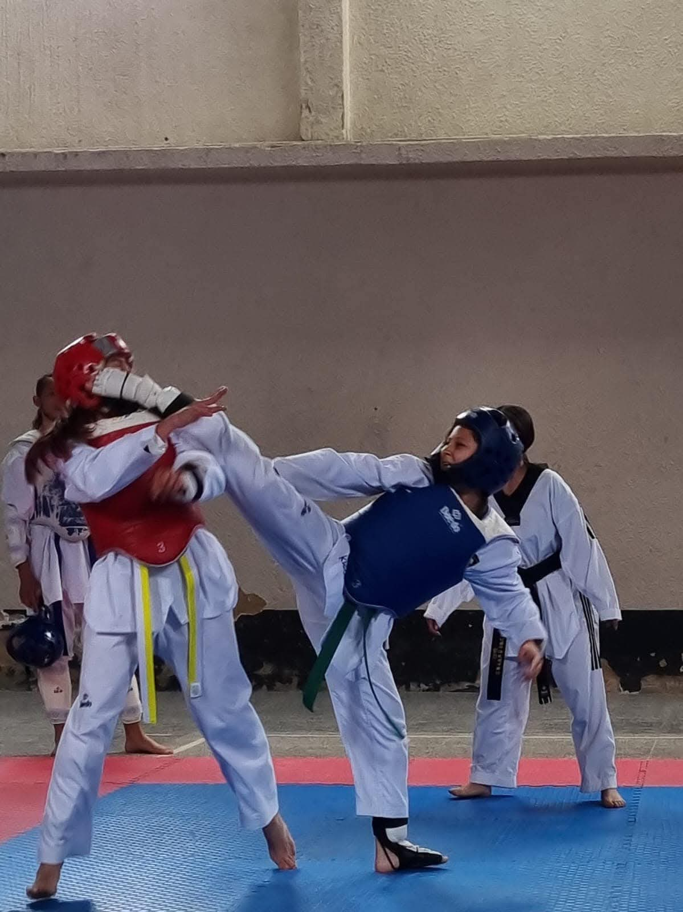
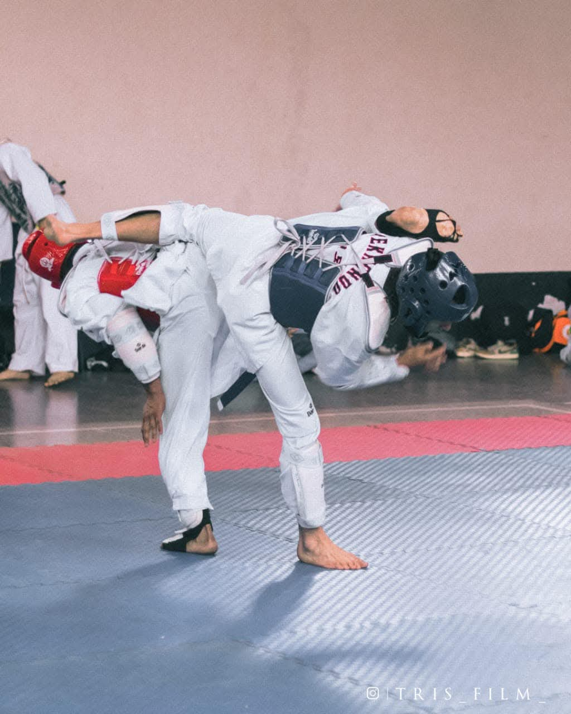
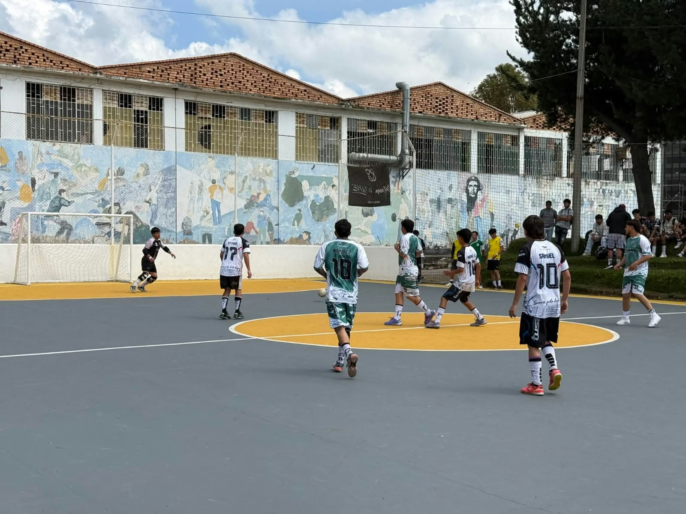
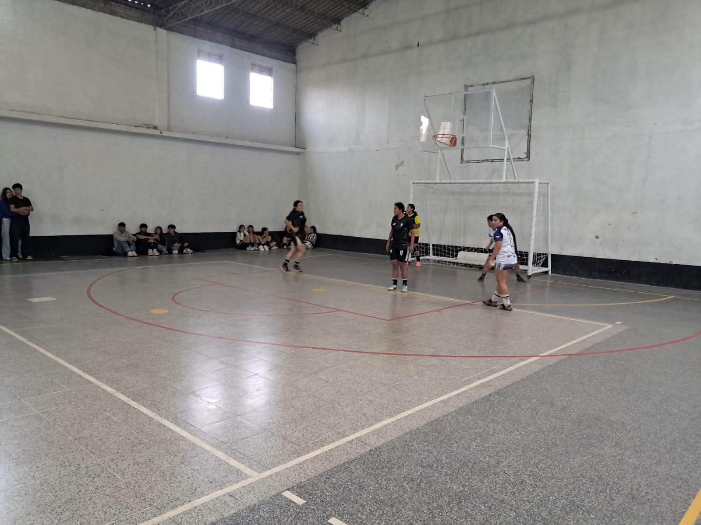
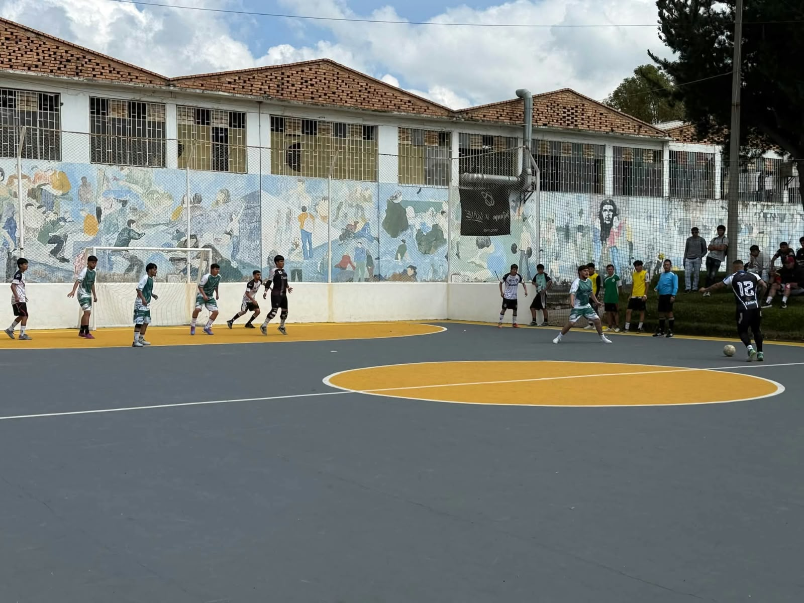
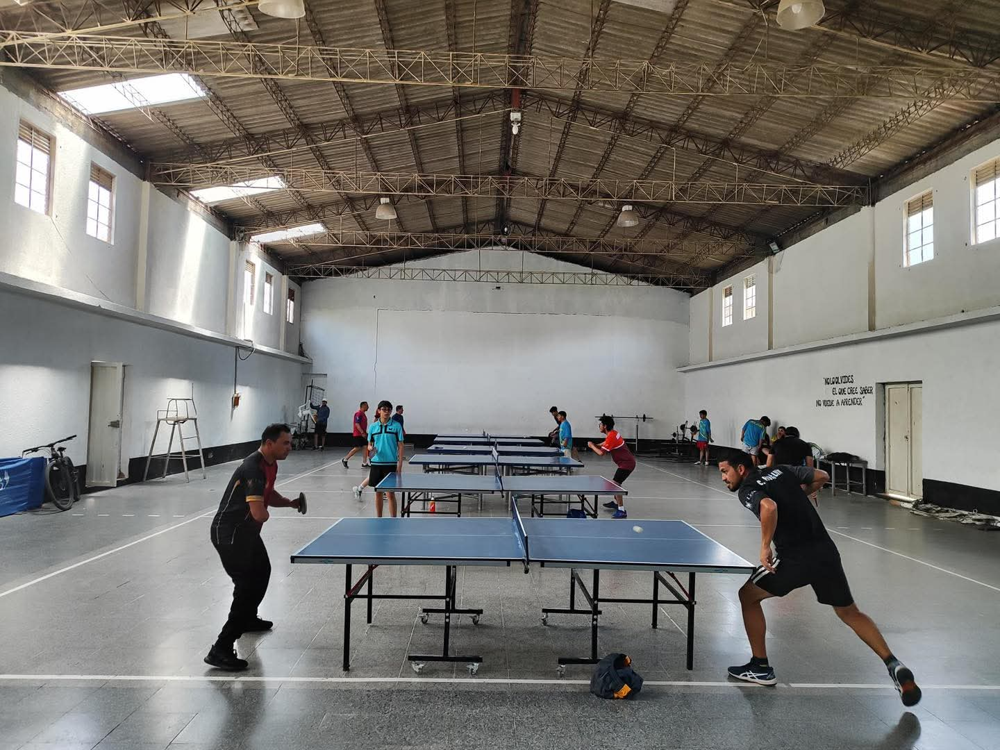
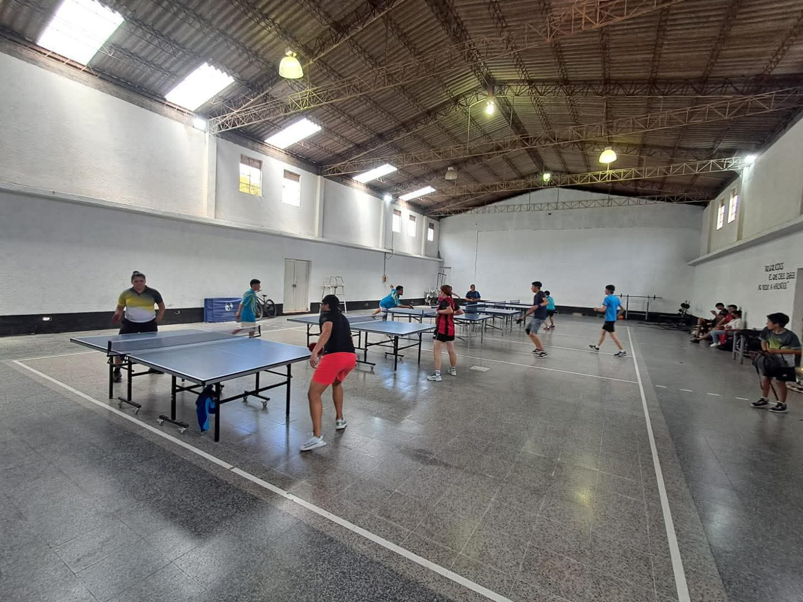
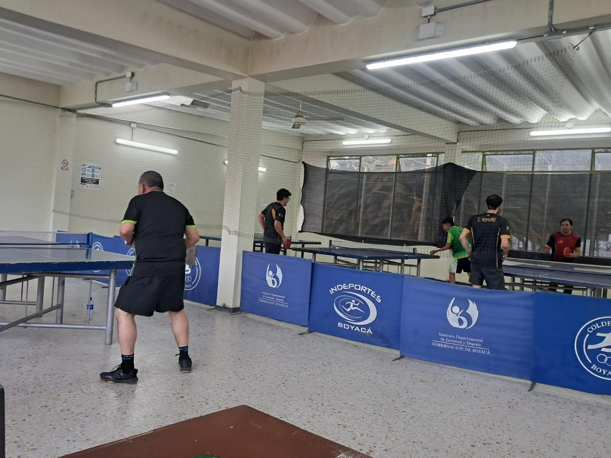
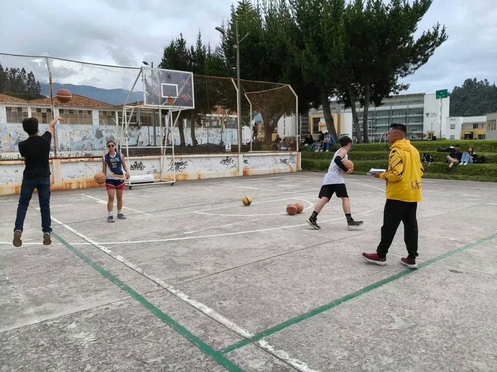
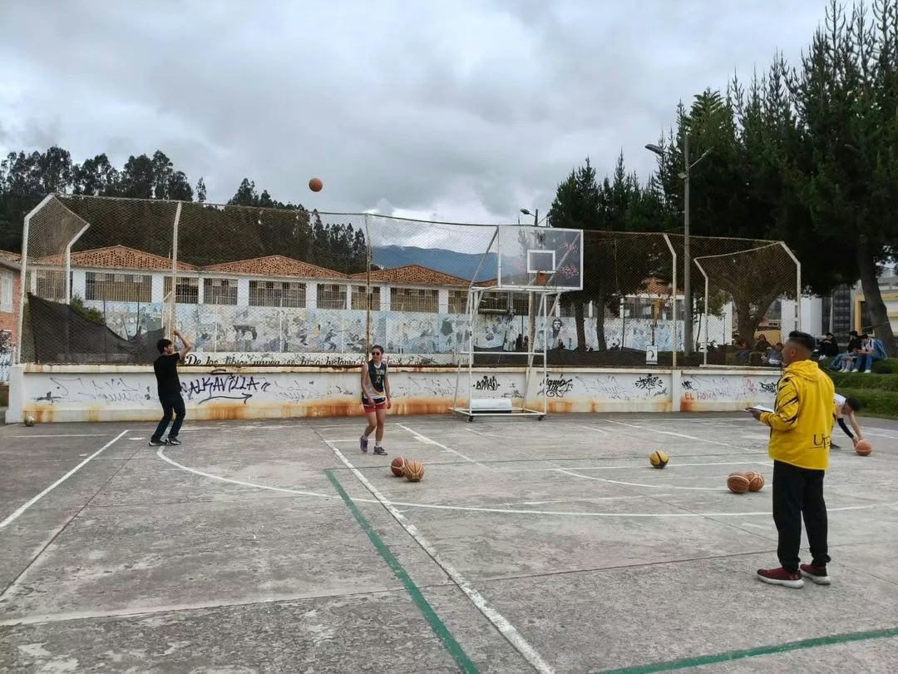

LICENCIATURA EN TECNOLOGÍA
CRÉDITOS LIBRES
Los créditos libres son espacios de formación complementaria que permiten a los estudiantes universitarios desarrollar habilidades, fortalecer sus capacidades físicas, fomentar la integración y aprovechar su tiempo libre mediante actividades deportivas y recreativas. La oferta incluye diferentes disciplinas deportivas en modalidad presencial y grupal, con horarios establecidos para facilitar la participación de la comunidad universitaria.
GIMNASIOSesiones estructuradas de acondicionamiento físico orientadas al fortalecimiento del cuerpo, el desarrollo de las capacidades físicas y la promoción de hábitos saludables. InformacionObjetivo: Promover la actividad física, mejorar la condición corporal y fortalecer la coordinación, flexibilidad,
resistencia y bienestar de los participantes.
Fotos


|
TAEKWONDO BASECurso base en el que se inicia un proceso de aprendizaje más avanzado en este deporte, mediante la enseñanza de técnicas, movimientos y formas de ejecución propias del taekwondo. InformacionObjetivo: Fortalecer las habilidades técnicas y físicas de los participantes, promoviendo la disciplina, el
autocontrol, la coordinación y el respeto.
Fotos |
|||||||||||||||||||||||||||||||||
TAEKWONDOCurso formativo que permite iniciar el proceso de aprendizaje del taekwondo, enseñando las bases de este deporte y desarrollando habilidades mediante la práctica de sus movimientos y técnicas fundamentales. InformacionObjetivo:Desarrollar las capacidades físicas, la coordinación, la disciplina y el respeto a través de la práctica del
taekwondo.
Fotos |
FÚTBOL SALAEntrenamientos dirigidos a estudiantes y personal administrativo de la sede, con el propósito de promover la práctica del fútbol sala y el aprovechamiento del tiempo libre mediante actividades deportivas. InformacionObjetivo: Fortalecer las habilidades técnicas, la coordinación, el trabajo en equipo y la capacidad de cooperación
a través del fútbol sala.
Fotos   |
|||||||||||||||||||||||||||||||||
TENIS DE MESADescripción: Entrenamientos de tenis de mesa dirigidos a estudiantes y funcionarios de la universidad, enfocados en el aprendizaje y fortalecimiento de las habilidades propias de esta disciplina deportiva. InformacionObjetivo: Desarrollar la coordinación, los reflejos, la concentración, la agilidad y las habilidades técnicas
mediante la práctica del tenis de mesa.
Fotos   |
BALONCESTOSesiones estructuradas de acondicionamiento físico y técnico enfocadas en el baloncesto, que permiten desarrollar las habilidades necesarias para la práctica de esta disciplina deportiva. InformacionObjetivo: Fortalecer las capacidades físicas, las habilidades técnicas, la coordinación y el trabajo en equipo
mediante ejercicios y actividades relacionadas con el baloncesto.
Fotos  |
|||||||||||||||||||||||||||||||||
FÚTBOLEntrenamientos dirigidos a la comunidad universitaria para promover la práctica del fútbol, incentivar el aprovechamiento del tiempo libre y fortalecer la participación en actividades deportivas. InformacionObjetivo: Desarrollar las habilidades técnicas y físicas de los participantes, fomentando el trabajo en equipo, la
cooperación, la disciplina y la integración.
Fotos |
© Todos los derechos reservados - Creado por Nury Gomez
Universidad Pedagógica y Tecnológica de Colombia
2026